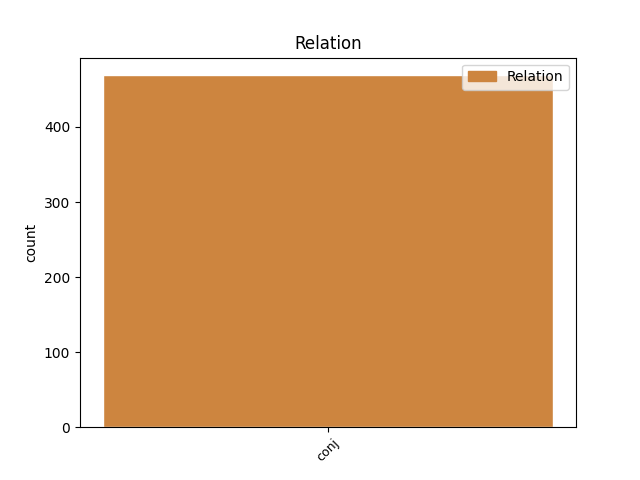
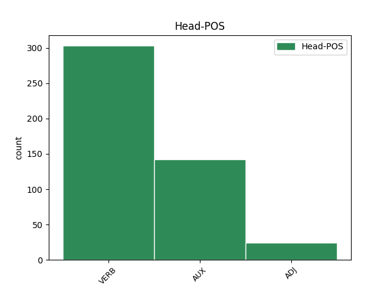
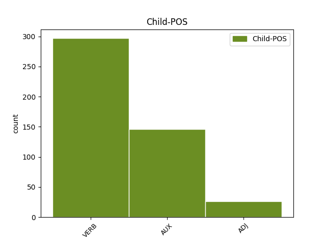

Distribution of features within this leaf



Agreement Rules sorted by frequency.
- When the dependent token is the conjunct(conj) of the head token, and the dependent token is VERB.
1 Nackdelarna _ _ _ _ 0 _ _ _
2 för _ _ _ _ 0 _ _ _
3 barnen _ _ _ _ 0 _ _ _
4 med _ _ _ _ 0 _ _ _
5 föräldrarnas _ _ _ _ 0 _ _ _
6 heltidsarbete _ _ _ _ 0 _ _ _
7 kunde _ _ _ _ 0 _ _ _
8 emellertid _ _ _ _ 0 _ _ _
9 minskas _ _ _ _ 0 _ _ _
10 om _ _ _ _ 0 _ _ _
11 det _ _ _ _ 0 _ _ _
12 byggdes bygga VERB VB|PRT|SFO Mood=Ind|Tense=Past|VerbForm=Fin|Voice=Pass 0 _ _ _
13 flera _ _ _ _ 0 _ _ _
14 servicehus _ _ _ _ 0 _ _ _
15 eller _ _ _ _ 0 _ _ _
16 man _ _ _ _ 0 _ _ _
17 på _ _ _ _ 0 _ _ _
18 annat _ _ _ _ 0 _ _ _
19 sätt _ _ _ _ 0 _ _ _
20 hjälpte hjälpa VERB VB|PRT|AKT Mood=Ind|Tense=Past|VerbForm=Fin|Voice=Act 12 conj _ _
21 föräldrarna _ _ _ _ 0 _ _ _
22 att _ _ _ _ 0 _ _ _
23 ha _ _ _ _ 0 _ _ _
24 råd _ _ _ _ 0 _ _ _
25 att _ _ _ _ 0 _ _ _
26 rationalisera _ _ _ _ 0 _ _ _
27 hemarbetet _ _ _ _ 0 _ _ _
28 så _ _ _ _ 0 _ _ _
29 att _ _ _ _ 0 _ _ _
30 de _ _ _ _ 0 _ _ _
31 verkligen _ _ _ _ 0 _ _ _
32 finge _ _ _ _ 0 _ _ _
33 tid _ _ _ _ 0 _ _ _
34 att _ _ _ _ 0 _ _ _
35 ägna _ _ _ _ 0 _ _ _
36 sig _ _ _ _ 0 _ _ _
37 åt _ _ _ _ 0 _ _ _
38 barnen _ _ _ _ 0 _ _ _
39 efter _ _ _ _ 0 _ _ _
40 arbetsdagens _ _ _ _ 0 _ _ _
41 slut _ _ _ _ 0 _ _ _
42 . _ _ _ _ 0 _ _ _
1 Men _ _ _ _ 0 _ _ _
2 det _ _ _ _ 0 _ _ _
3 är _ _ _ _ 0 _ _ _
4 ingenting _ _ _ _ 0 _ _ _
5 som _ _ _ _ 0 _ _ _
6 säger _ _ _ _ 0 _ _ _
7 - _ _ _ _ 0 _ _ _
8 och _ _ _ _ 0 _ _ _
9 knappast _ _ _ _ 0 _ _ _
10 någon _ _ _ _ 0 _ _ _
11 seriös _ _ _ _ 0 _ _ _
12 modern _ _ _ _ 0 _ _ _
13 forskare _ _ _ _ 0 _ _ _
14 som _ _ _ _ 0 _ _ _
15 sagt _ _ _ _ 0 _ _ _
16 - _ _ _ _ 0 _ _ _
17 att _ _ _ _ 0 _ _ _
18 1. _ _ _ _ 0 _ _ _
19 det _ _ _ _ 0 _ _ _
20 måste måste AUX VB|PRS|AKT Mood=Ind|Tense=Pres|VerbForm=Fin|Voice=Act 0 _ _ _
21 vara _ _ _ _ 0 _ _ _
22 modern _ _ _ _ 0 _ _ _
23 , _ _ _ _ 0 _ _ _
24 som _ _ _ _ 0 _ _ _
25 står _ _ _ _ 0 _ _ _
26 för _ _ _ _ 0 _ _ _
27 kontakten _ _ _ _ 0 _ _ _
28 , _ _ _ _ 0 _ _ _
29 2. _ _ _ _ 0 _ _ _
30 det _ _ _ _ 0 _ _ _
31 måste måste AUX VB|PRS|AKT Mood=Ind|Tense=Pres|VerbForm=Fin|Voice=Act 20 conj _ _
32 vara _ _ _ _ 0 _ _ _
33 bara _ _ _ _ 0 _ _ _
34 en _ _ _ _ 0 _ _ _
35 person _ _ _ _ 0 _ _ _
36 , _ _ _ _ 0 _ _ _
37 som _ _ _ _ 0 _ _ _
38 vårdar _ _ _ _ 0 _ _ _
39 barnet _ _ _ _ 0 _ _ _
40 , _ _ _ _ 0 _ _ _
41 3. _ _ _ _ 0 _ _ _
42 att _ _ _ _ 0 _ _ _
43 den _ _ _ _ 0 _ _ _
44 eller _ _ _ _ 0 _ _ _
45 de _ _ _ _ 0 _ _ _
46 som _ _ _ _ 0 _ _ _
47 vårdar _ _ _ _ 0 _ _ _
48 barnet _ _ _ _ 0 _ _ _
49 behöver _ _ _ _ 0 _ _ _
50 fungera _ _ _ _ 0 _ _ _
51 oavbrutet _ _ _ _ 0 _ _ _
52 under _ _ _ _ 0 _ _ _
53 dygnets _ _ _ _ 0 _ _ _
54 24 _ _ _ _ 0 _ _ _
55 timmar _ _ _ _ 0 _ _ _
56 . _ _ _ _ 0 _ _ _
1 Att _ _ _ _ 0 _ _ _
2 små _ _ _ _ 0 _ _ _
3 barn _ _ _ _ 0 _ _ _
4 inte _ _ _ _ 0 _ _ _
5 skulle _ _ _ _ 0 _ _ _
6 kunna _ _ _ _ 0 _ _ _
7 ta _ _ _ _ 0 _ _ _
8 emot _ _ _ _ 0 _ _ _
9 och _ _ _ _ 0 _ _ _
10 ge _ _ _ _ 0 _ _ _
11 värme _ _ _ _ 0 _ _ _
12 till _ _ _ _ 0 _ _ _
13 flera _ _ _ _ 0 _ _ _
14 personer _ _ _ _ 0 _ _ _
15 , _ _ _ _ 0 _ _ _
16 om _ _ _ _ 0 _ _ _
17 dessa _ _ _ _ 0 _ _ _
18 bara _ _ _ _ 0 _ _ _
19 uppfyller _ _ _ _ 0 _ _ _
20 kravet _ _ _ _ 0 _ _ _
21 att _ _ _ _ 0 _ _ _
22 vara _ _ _ _ 0 _ _ _
23 igenkända känna_igen ADJ PC|PRF|UTR/NEU|PLU|IND/DEF|NOM Case=Nom|Number=Plur|Tense=Past|VerbForm=Part 0 _ _ _
24 och _ _ _ _ 0 _ _ _
25 älskade älskad ADJ PC|PRF|UTR/NEU|PLU|IND/DEF|NOM Case=Nom|Number=Plur|Tense=Past|VerbForm=Part 23 conj _ _
26 av _ _ _ _ 0 _ _ _
27 barnen _ _ _ _ 0 _ _ _
28 , _ _ _ _ 0 _ _ _
29 finns _ _ _ _ 0 _ _ _
30 det _ _ _ _ 0 _ _ _
31 inga _ _ _ _ 0 _ _ _
32 vetenskapliga _ _ _ _ 0 _ _ _
33 belägg _ _ _ _ 0 _ _ _
34 för _ _ _ _ 0 _ _ _
35 . _ _ _ _ 0 _ _ _
Disagree Examples:
1 I _ _ _ _ 0 _ _ _
2 början _ _ _ _ 0 _ _ _
3 sågs se VERB VB|PRT|SFO Mood=Ind|Tense=Past|VerbForm=Fin|Voice=Pass 0 _ _ _
4 kommissionen _ _ _ _ 0 _ _ _
5 som _ _ _ _ 0 _ _ _
6 en _ _ _ _ 0 _ _ _
7 upptakt _ _ _ _ 0 _ _ _
8 till _ _ _ _ 0 _ _ _
9 en _ _ _ _ 0 _ _ _
10 Europaregering _ _ _ _ 0 _ _ _
11 , _ _ _ _ 0 _ _ _
12 med _ _ _ _ 0 _ _ _
13 åtföljande _ _ _ _ 0 _ _ _
14 politisk _ _ _ _ 0 _ _ _
15 makt _ _ _ _ 0 _ _ _
16 , _ _ _ _ 0 _ _ _
17 men _ _ _ _ 0 _ _ _
18 nu _ _ _ _ 0 _ _ _
19 har ha AUX VB|PRS|AKT Mood=Ind|Tense=Pres|VerbForm=Fin|Voice=Act 3 conj _ _
20 den _ _ _ _ 0 _ _ _
21 reducerats _ _ _ _ 0 _ _ _
22 till _ _ _ _ 0 _ _ _
23 en _ _ _ _ 0 _ _ _
24 utpräglad _ _ _ _ 0 _ _ _
25 ' _ _ _ _ 0 _ _ _
26 tjänstemannamaffia _ _ _ _ 0 _ _ _
27 ' _ _ _ _ 0 _ _ _
28 . _ _ _ _ 0 _ _ _
1 För _ _ _ _ 0 _ _ _
2 att _ _ _ _ 0 _ _ _
3 sköta _ _ _ _ 0 _ _ _
4 en _ _ _ _ 0 _ _ _
5 rigg _ _ _ _ 0 _ _ _
6 behövs _ _ _ _ 0 _ _ _
7 ett _ _ _ _ 0 _ _ _
8 50-tal _ _ _ _ 0 _ _ _
9 man _ _ _ _ 0 _ _ _
10 - _ _ _ _ 0 _ _ _
11 det _ _ _ _ 0 _ _ _
12 är vara AUX VB|PRS|AKT Mood=Ind|Tense=Pres|VerbForm=Fin|Voice=Act 0 _ _ _
13 entreprenörens _ _ _ _ 0 _ _ _
14 eget _ _ _ _ 0 _ _ _
15 folk _ _ _ _ 0 _ _ _
16 och _ _ _ _ 0 _ _ _
17 alltså _ _ _ _ 0 _ _ _
18 inga _ _ _ _ 0 _ _ _
19 lokalanställda lokalanställd ADJ PC|PRF|UTR/NEU|PLU|IND/DEF|NOM Case=Nom|Number=Plur|Tense=Past|VerbForm=Part 12 conj _ SpaceAfter=No
20 . _ _ _ _ 0 _ _ _
1 Men _ _ _ _ 0 _ _ _
2 valmaskinleverantören _ _ _ _ 0 _ _ _
3 sviktade svikta VERB VB|PRT|AKT Mood=Ind|Tense=Past|VerbForm=Fin|Voice=Act 0 _ _ _
4 i _ _ _ _ 0 _ _ _
5 sista _ _ _ _ 0 _ _ _
6 stund _ _ _ _ 0 _ _ _
7 och _ _ _ _ 0 _ _ _
8 vi _ _ _ _ 0 _ _ _
9 får få AUX VB|PRS|AKT Mood=Ind|Tense=Pres|VerbForm=Fin|Voice=Act 3 conj _ _
10 vänta _ _ _ _ 0 _ _ _
11 till _ _ _ _ 0 _ _ _
12 nästa _ _ _ _ 0 _ _ _
13 val _ _ _ _ 0 _ _ _
14 . _ _ _ _ 0 _ _ _
1 Och _ _ _ _ 0 _ _ _
2 i _ _ _ _ 0 _ _ _
3 väntan _ _ _ _ 0 _ _ _
4 på _ _ _ _ 0 _ _ _
5 vad _ _ _ _ 0 _ _ _
6 över _ _ _ _ 0 _ _ _
7 700000 _ _ _ _ 0 _ _ _
8 poströster _ _ _ _ 0 _ _ _
9 ska _ _ _ _ 0 _ _ _
10 betyda _ _ _ _ 0 _ _ _
11 för _ _ _ _ 0 _ _ _
12 regeringsinnehav _ _ _ _ 0 _ _ _
13 och _ _ _ _ 0 _ _ _
14 riksdagssammansättning _ _ _ _ 0 _ _ _
15 är _ _ _ _ 0 _ _ _
16 det _ _ _ _ 0 _ _ _
17 naturligt _ _ _ _ 0 _ _ _
18 att _ _ _ _ 0 _ _ _
19 undra _ _ _ _ 0 _ _ _
20 varför _ _ _ _ 0 _ _ _
21 betänkandet _ _ _ _ 0 _ _ _
22 från _ _ _ _ 0 _ _ _
23 1965 _ _ _ _ 0 _ _ _
24 års _ _ _ _ 0 _ _ _
25 valtekniska _ _ _ _ 0 _ _ _
26 utredning _ _ _ _ 0 _ _ _
27 , _ _ _ _ 0 _ _ _
28 framlagt framlägga ADJ PC|PRF|NEU|SIN|IND|NOM Case=Nom|Definite=Ind|Gender=Neut|Number=Sing|Tense=Past|VerbForm=Part 0 _ _ _
29 i _ _ _ _ 0 _ _ _
30 fjol _ _ _ _ 0 _ _ _
31 höst _ _ _ _ 0 _ _ _
32 ( _ _ _ _ 0 _ _ _
33 SOU _ _ _ _ 0 _ _ _
34 1969:19 _ _ _ _ 0 _ _ _
35 ) _ _ _ _ 0 _ _ _
36 och _ _ _ _ 0 _ _ _
37 innehållande innehålla ADJ PC|PRS|UTR/NEU|SIN/PLU|IND/DEF|NOM Case=Nom|Tense=Pres|VerbForm=Part 28 conj _ _
38 just _ _ _ _ 0 _ _ _
39 den _ _ _ _ 0 _ _ _
40 datavalteknik _ _ _ _ 0 _ _ _
41 som _ _ _ _ 0 _ _ _
42 här _ _ _ _ 0 _ _ _
43 redovisats _ _ _ _ 0 _ _ _
44 , _ _ _ _ 0 _ _ _
45 inte _ _ _ _ 0 _ _ _
46 blev _ _ _ _ 0 _ _ _
47 omsatt _ _ _ _ 0 _ _ _
48 i _ _ _ _ 0 _ _ _
49 praktiken _ _ _ _ 0 _ _ _
50 till _ _ _ _ 0 _ _ _
51 1970 _ _ _ _ 0 _ _ _
52 års _ _ _ _ 0 _ _ _
53 val _ _ _ _ 0 _ _ _
54 . _ _ _ _ 0 _ _ _
1 Fick _ _ _ _ 0 _ _ _
2 de _ _ _ _ 0 _ _ _
3 andra _ _ _ _ 0 _ _ _
4 arbetstider _ _ _ _ 0 _ _ _
5 skulle skola AUX VB|PRT|AKT Mood=Ind|Tense=Past|VerbForm=Fin|Voice=Act 0 _ _ _
6 de _ _ _ _ 0 _ _ _
7 trivas _ _ _ _ 0 _ _ _
8 bättre _ _ _ _ 0 _ _ _
9 och _ _ _ _ 0 _ _ _
10 fungera _ _ _ _ 0 _ _ _
11 bättre _ _ _ _ 0 _ _ _
12 och _ _ _ _ 0 _ _ _
13 därför _ _ _ _ 0 _ _ _
14 är vara AUX VB|PRS|AKT Mood=Ind|Tense=Pres|VerbForm=Fin|Voice=Act 5 conj _ _
15 det _ _ _ _ 0 _ _ _
16 på _ _ _ _ 0 _ _ _
17 tiden _ _ _ _ 0 _ _ _
18 att _ _ _ _ 0 _ _ _
19 man _ _ _ _ 0 _ _ _
20 gör _ _ _ _ 0 _ _ _
21 ett _ _ _ _ 0 _ _ _
22 försök _ _ _ _ 0 _ _ _
23 , _ _ _ _ 0 _ _ _
24 exempelvis _ _ _ _ 0 _ _ _
25 inom _ _ _ _ 0 _ _ _
26 processindustrin _ _ _ _ 0 _ _ _
27 , _ _ _ _ 0 _ _ _
28 att _ _ _ _ 0 _ _ _
29 variera _ _ _ _ 0 _ _ _
30 arbetstiderna _ _ _ _ 0 _ _ _
31 . _ _ _ _ 0 _ _ _